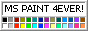
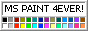
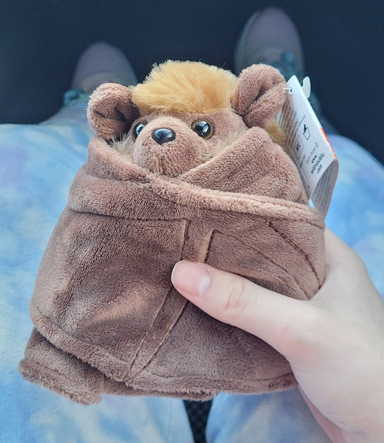

Trip to San Antonio
| 3441 words
I'm finally back from my trip to see my partner, and it's safe to say that it's easily been the best week of my entire life, I don't even know where to start with writing about how wonderful my time with them was! I suppose I can start with going in chronological order..
Day one: My flight was scheduled to leave around 2:30 in the afternoon, so I left for the airport relatively early to make sure that I had enough time to get the wheelchair assistance and to get through security. I guess that might've not been enough time though, because getting the wheelchair assistance at Orlando International (MCO) was such a headache for multiple reasons.
First of all, the wait-time to get through security was well over an hour long, likely because it was still the beginning of January and people were trying to get back home from their Christmas celebrations- the fact that there was a separate and much shorter line for wheelchair users essentially saved my entire trip because, otherwise, I would've easily missed my flight. Secondly, getting the wheelchair assistance itself took so long because those who had missed their flight due to the long security lines were being funneled into the wheelchair assistance lines at check-in, for some dumb reason. Third of all, I had no idea that I was supposed to get a separate boarding pass printed out from one of Spirit's kiosks, so getting that done ate up more time. By the time I got all of that done, I had just an hour and a half left, which was time that I desperately needed especially when I was also scheduled for pre-boarding.
Otherwise, my flight and deplaning went pretty smooth (although, the flight itself there was very bumpy in terms of turbulence, and I easily would've shat myself if I wasn't already an experienced flier beforehand,) and after meeting with my partner we decided to go to Five Guys to get some dinner before we went to their place to watch some Dan Vs. and Trailer Park Boys, before we called it a night after my very long day.

Day two: Day two was pretty quiet as I needed some time to recoup from my travel day, so we spent a lot of it doing small errands, taking drives around the city, and watching MASH and more Trailer Park Boys.
Day three: On Wednesday we went to the museum! It was a pretty modest museum, and Ghost themselves says that it's likely been downsized since they last went as a child (plus, there were many sections that were closed for refurbishment,) but it was still a fun outing- really, doing anything with them ends up being a lot of fun! They also got me this adorable Wild Republic Cuddlekins plush of a little brown bat that I cherish so much. He didn't have a name until I came back from my trip, but Ghost lovingly suggested that I name it Radar, after Radar O'Reilly from MASH! (Sidenote: You'll be seeing MASH be mentioned multiple times throughout this journal entry, we watched a ton of it...)

We also got to the "building IKEA furniture together" phase of our relationship that day, as I need to have something to sit on while I shower due to my disabilities, and asking them to buy me an actual shower stool just for me to use it only a couple times a year would be insane, so it had to be the IKEA stool. I think it was the ultimate test to our compatibility as a couple though, and while we did get a bit frustrated at times with the lack of words on IKEA's instruction manuals, we eventually got it built properly. Although I still can't believe what our first attempt looked like...
We ended the day with Whiteclaws, indica gummies, sativa vapes, and a night out for dinner at Chuy's for some good tex-mex! It was actually my first tex-mex experience and I was not at all disappointed with what I got- I ended up getting the chicken flautas, which are corn tortillas filled with roasted chicken and cheese that are rolled, fried and topped with smoky Chipotle sauce. I ended up getting the guacamole and sour cream on the side, but both were very good, as well as the refried beans! I wasn't a huge fan of the Mexican rice, but that's just because I'm not much of a rice person.

Day four: Our fourth day was another relatively quiet day, especially with the amount of pain I was in after our venture out to the museum the day before, so we took it easy again and passed the time with some driving and MASH marathons.
This was also the day when Ghost attempted to take me to this cool comic book store that they've been wanting to show me for ages, only for us to get there and realize that it was closed... We still had a fun drive out despite that though, and they took me to see these murals that they spotted while out on the road one day which were very cool! I love seeing art out in the open like this...

Day five: Another fairly quiet and relaxing day, we spent pretty much the entire time watching MASH, to the point where we're now up to season 5 if I'm remembering correctly! Enjoyed lots of Whiteclaw between each other, and this was also the night we ordered some really good pad thai and springrolls for dinner! Most of the day, however, was spent with me resting up to prepare for our adventure the next day...
Day six: Saturday was our day to go to Six Flags Fiesta Texas, and we had so much fun!! I think I might've even gotten my partner even more interested in roller coasters, because it was their first time riding any for a long while!
We started the day by riding The Joker: Carnival of Chaos, which isn't even a roller coaster but was still a ton of fun! Usually I'm not a big fan of flat rides since a lot of them involve spinning (which is my one and only motion sickness trigger,) but the spinning on this ride wasn't nearly as bad as some of the other ones in the park!
As for the coasters we did end up going on, here's a list of what we ended up doing:
- Boomerang: Coast to Coaster - Not much to say about this one, just your average Vekoma Boomerang coaster. I don't find these super rough, but maybe that's just because I've experienced rides like Le Monstre at La Ronde which ended up making me so nauseous from how rough it was.
- Iron Rattler - Probably my favourite coaster in the whole park! Even after all these years later and with more extreme coasters under RMC's belt, Iron Rattler still packs a good punch. It also has the benefit of being in one of the most beautiful parts of the entire park, and I love how it uses the land formations to it's advantage in it's layout. It also ended up being my first RMC coaster ever!
- Dr. Diabolical's Cliffhanger - This one surprised me with the level of theming that went into it- it's nowhere near being the most theming I've experienced in a roller coaster, but compared to most Six Flags rides that just get the bare minimum, I was pleasantly surprised by the work put into building upon the ride's story. B&M dive coasters are also just a lot of fun in my opinion, and are best enjoyed in the company of someone you love.
- Poltergeist - What a fun ride this is!! It may be small in height, but it still offers many great thrills that you don't really see at many other amusement parks! The compact layout also offers many head-chopper moments. The theming in the queue is also a lot of fun, and I love the way that the safety briefing videos are stylized like old black-and-white silent films.
- Wonder Woman: Golden Lasso Coaster - Another first for me, this time being my first RMC Raptor coaster! This one's pretty fun too, and really whips you around each element of the ride's course like nobody's business. I must say though, these things have terrible capacity, and it was easily the longest queue we had to wait in all day- it was running one-train operations at the time, and two of the seats on the single train they were running were out of order. I couldn't imagine what it'd be like to wait for this ride if I were to go for their busiest season...
- Superman: Krypton Coaster - An oldie but a goodie- this coaster is actually just a little bit older than I am, yet it still runs beautifully! I'm always a sucker for B&M floorless coasters, and this one definitely satisfies my need to ride even more of them with it's powerful 6 inversions and interactions with the quarry wall that surrounds the park.
We sadly didn't have the time to do coasters like Road Runner Express, Goliath, Kid Flash Cosmic Coaster, Streamliner Coaster, Batman: The Ride, or Pandemonium, with the last two being because they had spinning and that's the one thing that I just can't do, but I'm still very happy to have gotten the credits that I did, and this just means that I'll have to come back in the future!
A note about the rental scooters at Fiesta Texas however: they're in dire need of being replaced, because they're super old and may even be on their last legs. When I was at the rental booth, I was told that the scooter may sometimes stop in the middle of driving, start beeping, and refuse to move anymore, in which I'm supposed to turn it off and back on again. This happened to me multiple times throughout the day, and while the solution I was given did work, it was only temporary. They're also generally pretty clunky, slow and take up so much space compared to my own modern scooter that I have back at home. I know nobody from Six Flags is going to be reading this blog post, but I beg of someone to please send the message that they desperately need to get some new mobility aids for their rental services, at least something that doesn't shut down on you while you're in the middle of driving somewhere!!
That aside, our day at Six Flags Fiesta Texas was wonderful, and I thank all of the staff members there who were very helpful, friendly and accommodating for my needs! I was very sore by the end of the day though, so we just kicked back and relaxed for the rest of the night with some weed and alcohol.
Day seven: I was still fairly sore and tired by the time Sunday rolled around, plus I didn't want to over-exhaust myself for my return trip the next day, so we pretty much just laid back around the house and had even more Trailer Park Boys marathons! I also got a little bit of packing done (well, as much as I could get done at the time,) but most of my day was spent curling up with Ghost and kicking back.
Day eight: The saddest part of the trip, the day I had to return back to Florida where I'll stay for the rest of the month before returning back to Canada. Most of my day was spent packing, cuddling with Ghost, taking a drive to the CD exchange store, and watching a few more episodes of Trailer Park Boys before I had to leave for my flight later that night. I cried a lot that day, because for once in my life I genuinely felt safe, cared for, and loved unconditionally, and I had no choice but to leave all of that behind.
Getting my wheelchair assistance was much easier this time, and the airport was also much less busy at the time and date that I chose to come back, so getting through TSA and to my gate was a breeze and was left with a lot of time to kill before boarding began. It wasn't a problem though, as I'm someone who prefers to be at the airport and at my gate as early as possible to make sure that I actually get on the plane and offer myself plenty of time in case a problem comes up that needs to be solved, especially considering my support needs. My assistant was also funny as hell, and when I told him that I was visiting a friend, he said "Haha sure, a 'friend,' I saw you two kissing when I came to pick you up!" I'm just so used to referring to Ghost as my friend to people in real life that it's almost second nature, but in their own words, 'we're both friends and lovers!
Weird thing happened on my flight back home though. When calling Spirit before my flight, we made it clear that I was going to need assistance with putting my carry-on luggage up into the overhead compartments, since I didn't check-in any of my luggage. I guess that was a mistake though, because when I asked for help with this task on the plane, I was told by a stewardess that they weren't allowed to do that, which is really fucking weird considering the fact that I did end up getting help with this on my way to Texas...? Luckily I was able to get my luggage where it needed to go, but I can't imagine what I was supposed to do if I wasn't able to lift my luggage at all and didn't have the help I desperately needed, especially when I have a medical condition that caused my doctors to recommend that I don't lift anything too heavy to make sure that I don't hurt myself. Very bizarre and honestly rather disappointing on Spirit's end of things- this is an accessibility issue and I hope that this was just a fluke that mattered more on the flight crew that I had rather than an actual company policy.
Other than that, my flight back went well, and wasn't nearly as bumpy as it was going to Texas. I landed safely in Orlando that night, and was driven back to where I'm going to be staying for the rest of January.
I truly can't overstate how amazing my time with Ghost was. Even with the few flare ups I had and the sometimes shitty weather that got in the way of a few of our plans, I still had an incredible time with them and I already miss being with them so dearly. Not everything went to plan, such as going to the art museum one day or going to the mall, but spending any kind of time with them doing anything makes my heart swell and I'm still so glad that I got to spend some time being in their presence. It was also my very first time traveling anywhere by myself, and I wouldn't want to have done it with anyone other than them.
While our next trip plans are very much up in the air, we desperately want to meet up again, and it might happen where Ghost will come up to Canada to visit me sometime, or we may even go to Florida for some time together and experience what they have to offer! I think I might've gotten Ghost hooked on thrill rides, and that's something I'm very proud of for doing! No matter what we decide to do next though, I know I'm going to be happy spending any amount of time with them.
And to Ghost, if and when you read this (because I know that I will be sending you this entire journal entry once I'm finished with it,) I just want to thank you again for having me over and spending time with me. You're the best thing that's ever happened to me, and these past four years being with you have been incredible with how loved and needed you make me feel. I've already said it to you many times before, but you're one of the few people whom I truly feel completely safe around and whom I can let my guard down around, and that's not always easy for anyone to do for me, but when I was with you I actually felt a sense of being grounded when I'm so used to watching my life go on from above my own body, and I long for that feeling again.
Truly, from the bottom of my heart, thank you so much for everything you've done for me. If you told me years ago that I'd not only make the steps to go visit you in an entirely different country in an unfamiliar state, but to actually go completely by myself and do everything I needed to on my own, I wouldn't have believed you. But you were always there cheering me on and giving me the confidence to do all of this, and I can't thank you enough for it. I've had to experience some of my lowest points while I've been with you, but with this trip being at the start of the new year, I truly believe that 2024 is going to be our year and that things are going to get better for the both of us.

I love you so much, I love you more than anything in the world, and you're the most precious and special thing that I have in my life. Thank you for always being there for me and giving me your unconditional love and care, I hope I can always be there to return the favour for you because you deserve it and so much more. I hope our future is filled with many more adventures together, because you're the person that I want to spend the rest of my life with. I love you, Ghost, and I never want to stop loving you.